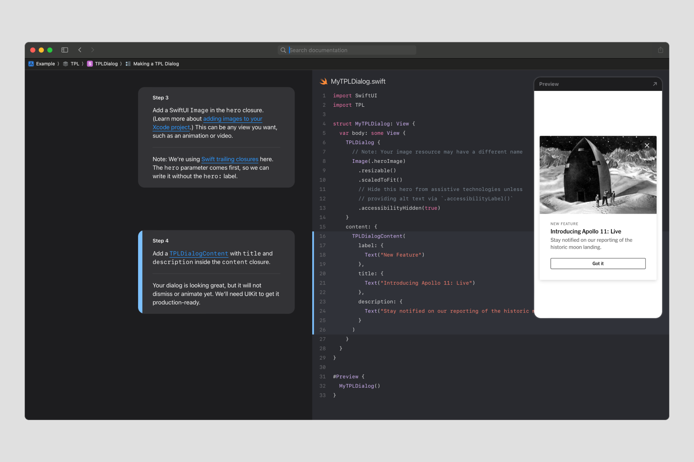
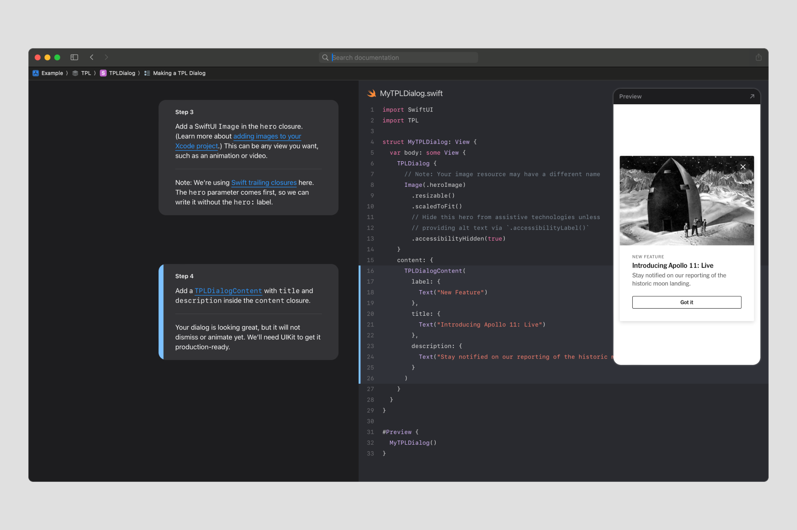

Swift Tales 1
July 2024 — This is the first installment of how I contributed to building the Times Product Language (TPL) design system for iOS.
The TPL team is me, Joseph Kohlmann, Sergio Cuevas, Riley Sykes, Jaclyn Saik, Norel Hassan, and Dan Mall. We began by learning the basics of SwiftUI and then transforming our tokens for color, typography, and spacing.
Humble beginnings
"Should designers code?”
That pesky question hit me differently when the TPL team was asked to spend 2024 making iOS components. We weren’t iOS engineers nor had we formally made anything in SwiftUI or UIKit, Apple’s most modern coding languages.
To answer: On the one hand, no; designers work in nebulous circumstances where the right skills can vary. But in that moment, oddly enough, I remember feeling absurdly fortunate. How rare it is to see the right opportunity, even an uncertain one, so clearly. Yes—this designer was going to learn to make stuff in iOS.
So I learned the same way our engineers Joe and Sergio did. We spent many hours Googling, practicing, and rigorously iterating our work. I studied at nights and had fun making sample projects with Hacking With Swift. And Swift Playgrounds also hooked me.
Despite the same effort, I developed strengths that were different from those of Joe and Sergio. As deeply experienced engineers, they were excellent at making source code efficient for production by applying their wisdom from other languages.
But as a designer, I connect different dots really well:
- At the prototyping phase, where I need to balance design requirements and engineering feasibility (see my latest iOS prototypes in GitHub.)
- At the polish phase, where I need to make documentation and code comments feel like a cohesive product (see Swift Tales 3 for an example).
On top of that, I learned to test VoiceOver and Dynamic Type and can now write code enhancements for accessibility.
 


Line height
The journey to translate line height (the space between lines of text) to iOS highlights how I connect dots at the prototyping phase.
I feel line height is a special detail that makes visuals shine (designer alert!), so I was motivated to make it accurate across all of our supported platforms.
Our design system uses JSON to store a single source of truth for basic design decisions. Ideally, one value can be directly injected into our code or conveniently translated to work with a platform’s preferred convention. My responsibility was to decide what integer makes the most sense to represent line height in TPL’s JSON repository.
On web, line height can be expressed in any unit accepted in CSS; unitless numbers are most accessible. In Figma, line height is expressed either in pixels or as a percentage.

I used Xcode to study how line height is set in SwiftUI and UIKit, called lineSpacing. I learned lineSpacing also takes an integer… but using the number that Figma produced was way off. What’s happening here?
iOS’s lineSpacing works similarly to pixels in Figma and web, but the integer starts with the font size. For example, a lineSpacing value of 0 applied to a font size of 16pt yields a 16pt line height, and a lineSpacing value of 2 applied to a font size of 18pt yields a 20pt line height.
With this knowledge, Joe and I decided to store a percentage in JSON and then translate it to an integer in iOS with the following formula I created:
lineSpacing = font size - (font size * percentage)
Interestingly I discovered it’s impossible to provide a lineSpacing value less than 0, or 100% of the font size. This isn’t common in practice, but alas, one of The New York Times's condensed fonts used less than 100% on web. When I brought this up to my new iOS engineering friends I was aghast to learn that for 10 years (!) this particular font was culturally known to be a pain and “impossible to fix”.
But how fortunate again I felt again. My journey had led me to find a problem that annoyed engineers for years, and one I uniquely had the skill and patience to fix. Over 2 days I used FontForge to adjust the metrics manually, tested it in Xcode, and together we shipped the fixed font file to production.

I found another strange problem in how iOS distributes line height around text.
While web and Figma equally split line height above and below a line of text, Apple places space only in-between lines of text. Yes, this is why our designs have spacing issues around text after handoff! Joe and I call this the “half-leading problem”.
By now, you know how much I care about line height. But I also now have new hard-earned wisdom. While I may have asked my engineers to “fix this” in the past, this was a simple problem with no simple solution. We decided not to attempt a programmatic fix to stay within scope and meet our deadline.
Summary
In 1.5 months I, Joe, and Sergio learned the basics of coding in iOS and distributed 100% of our JSON library of color, typography, and spacing tokens for use in SwiftUI. I used my new Xcode prototyping skills to solve problems quickly and to balance design requirements with engineering feasibility.
In the next installment, we’ll dive into our first iOS components!